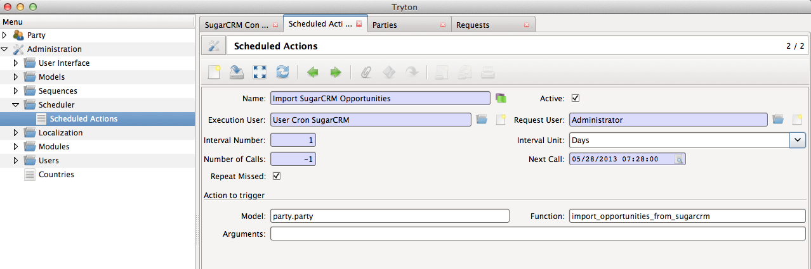

Configuring SugarCRM settings¶
The module should be configured with the REST API URL of the SugarCRM instance. The username and password of a user with sufficient access privileges is also required. This user can simply be the admin user.
Configure SugarCRM account¶
Menu: Party > Configuration > SugarCRM Configuration

Tip
Last import time indicates the last date time at which the opportunities were imported from SugarCRM to Tryton.
Cron for importing Opportunities from SugarCRM¶
Menu: Administration > Scheduler > Scheduled Actions
{kind=link}
Open the selected cron with name Import SugarCRM Opportunities.
{kind=link}
The details are described below:
- Interval Number and Interval Unit: These fields together make up the interval duration of this cron. By default, it is set to 1 Day. This means that the import takes place once in a day. You could increase or decrease the frequency by changing Interval Number, Interval Unit.
- Next Call: Indicates the date and time in which the import from Sugar will happen the next time. You could change this time if you want to prepone or delay the import.
Tip
You need not change the time here to make a quick manual import. You could go back into configuration and click on the Import button instead.
Tip
If the time of import just does not seem right to you, check your timezone in the preferences. Tryton displays times in the timezone set in the preferences of the user.